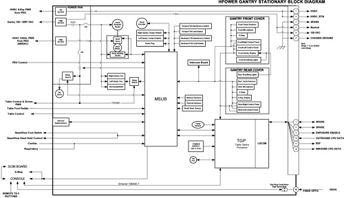
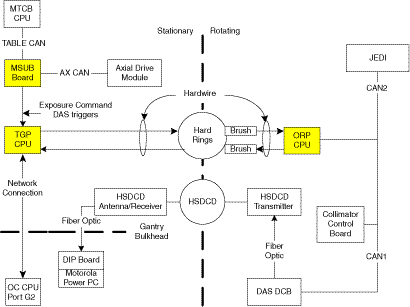
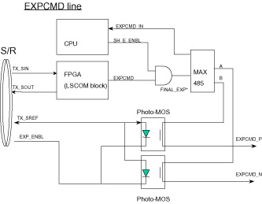
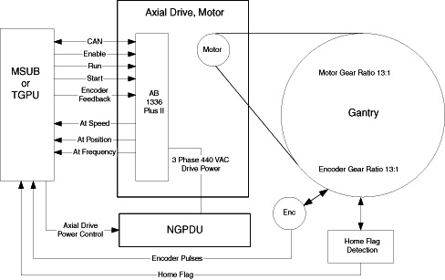
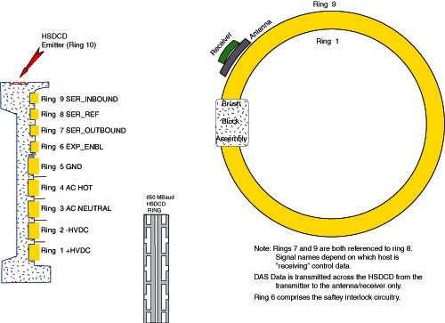
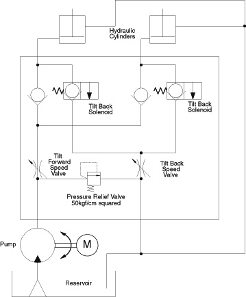

GEMS Proprietary Class: A
Direction 5117807-800, Rev# A
GEMS Proprietary Class: A |
This module contains theory information on the following gantry components/subsystems:
Gantry System - Section 2
TGP Board Overview - Section 3 (see “TGP Board Theory," for additional details)
MSUB Overview - Section 4 (see "MSUB Board Theory" for additional details)
TGPU Board Overview - Section 5 (see "TGPU Theory" for additional details)
| NOTE: | TGPU replaces both the TGP and the MSUB. |
Service Switch Board - Section 6
ORP Board Overview - Section 7 (see "ORP Board Theory," for additional details)
Axial Control Overview - Section 8 (see “Axial Control Theory”, for additional details)
HSDCD Slip Ring Architecture - Section 9 (see “HSDCD Slip Ring Theory”, for additional details)
Gantry Tilt - Section 10
Controller Area Network
Global Table Control Board (alternate name for MTCB, below)
High Speed Data Capacitive Device
Low Speed Communications
Milwaukee Subordinate Board
Milwaukee Table Control Board
On-Board Rotating Processor
Rotating Controller Interface Bus
Table Gantry Processor
Table Gantry Processor United with MSUB
Table 1: Gantry Main Electronic Boards and Functions
| Board | Main Function |
| TGP Board | LAN communications to System Host Control |
| MSUB board control | |
| LSCOM communication with the ORP board via slip rings | |
| MSUB Board | Gantry axial speed and position control |
| Axial speed/position monitoring | |
| DAS trigger generation | |
| Table Interface | |
| Scan Start/stop control | |
| Operator Hard key monitor | |
| X-ray light control | |
| TGPU | Contains all functions of both TGP and MSUB |
| ORP Board | LSCOM communication with the TGP board via slip rings |
| CAN communication with other rotating components | |
| Alignment light control |
Illustration 1: Gantry Stationary Block Diagram (w/ TGP & MSUB)

| NOTE: | For a larger version of the Gantry Stationary Block Diagram (w/ TGP & MSUB), click on the icon below: |
Media File 1: Gantry Stationary Block Diagram (w/ TGP & MSUB)

| NOTE: | TGP and MSUB functions are both on the same board, if a TGPU is used. |
Illustration 2: Communication Block Diagram (w/GRE Console)

Communications between the OC and Gantry computers are performed by a LAN connection and hard-wired slip-rings. Scan data from the DAS is transferred across the HSDCD (High Speed Data Capacitive Device) ring to the DIP board in the console. The table below ( Table 2) shows the DAS data transfer differences between the Pro16 and RT systems
Table 2: DAS Data Transfer Rates
| Pro16 system | RT system | |
| DAS type | MDAS-16 | MDAS (4/8 slice) |
| Slipring Max data rate | 850Mb | 850Mb |
| Tx/Rx module | 850Mb | 400Mb |
A modified Transmitter and Receiver module is used by the RT system to accommodate the slower data rate of the older MDAS.
The LAN cable provides the communication path between the OC computer in the console and the TGP in the stationary gantry. The hard slip rings allow the bidirectional transfer of data between the TGP and the rotating components, including the ORP. The control rings transfer data at 2.5 Mbaud.
The system utilizes one HSDCD ring and nine hard wired slip rings. Five rings provide AC and DC power and ground; one provides interlock signal for the HV subsystem; and three provide the communication path between the stationary and rotating components. Only the three communication rings will be discussed here.
The hard slip rings communication connection acts as a sub-network between the TGP and ORP, but also carries the specific DAS trigger and Exposure Command signals multiplexed within the data stream. Control and status information travels in both directions across the rotating interface along two high speed serial links utilizing three rings, one inbound and one outbound, both using an isolated ring as signal reference. This provides for excellent noise immunity. Brushes ride on the conductive ring material to provide signal connection to the stationary components, and screws inserted into the back of each ring provide the connection for the rotating components. Serial link control and signal multiplexing/de-multiplexing is provided by TGP and ORP boards. LEDs located on these boards indicate communication status of the data paths.
Scan Data travels from the rotating side to the stationary side and ultimately to the reconstruction subsystem through the HSDCD ring. This contact-less path begins at the HSDCD transmitter on the rotating structure. The stationary pickup is an antenna and receiver coupled together. The HSDCD ring and antenna form two plates of a capacitor. The transmitter input and receiver output are fiber-optic connections. Forward error correction is used in this path to ensure extremely high data reliability.
The CT system has an Emergency Stop Loop to all stop gantry tilt, axial rotation, and the table elevation and cradle movement. The status of the loop is connected to the NMI (Non-maskable Interrupt) pin of the CPU on the TGP board.
The TGP is informed of “E-STOP” status through the DRV_ENBL status register local to the MSUB (or TGPU) FPGA device. E-Stop is active when DRV_ENBL is “0” (active Low). When an E-Stop button is pressed, while the gantry is in motion, the drive will be commanded to decelerate to a stop. The MSUB (or TGPU) FPGA code proves a delay of approximately 5 seconds before the enable to the drive is set to an inactive position. When this occurs, the gantry will coast to a stop. This feature allows the gantry to come to a stop in a shorter time when E-Stop has been pressed. This feature is also connected to the gantry contact switches and the PDU Loop Contactor input signals.
For further detail, please refer to the System E-Stop and Power Interlocks functional drawing for either the TGP/MSUB or TGPU, as appropriate to your system.
The CT system uses signal EXP_ENBL to interlock the exposure enable loop by hardware devices.
The (electrical current) loop passes through the console, the PDU, the MSUB (or TGPU) board, the TGP board, and the ORP board; each of these components has a relay or SSR (Solid State Relay) to cut the loop when needed. The loop is connected between TGP and ORP via slip rings.
When the signal EXP_ENBL is at -5 V level, the x-ray exposure is enabled; while an open state indicates that the exposure is disabled.
The Exposure Enable loop is sensed at two locations on the loop. One is local on the MSUB (or TGPU) between the firmware commanded relay contact and the TGP watchdog circuit relay contact. The other signal is located in the PDU and is called the Door Interlock interrupt signal to the MSUB (or TGPU). These two signals are digitally OR’d together in the FPGA logic device producing a maskable interrupt signal to the TGP Board. Each of these signal has a status register available for firmware to read the current state of the input signal.
For further detail, please refer to the Exposure Enable and Final Command functional drawing.
The ORP board receives the EXP_ENBL signal using optical isolation. The circuits contain a kind of filter for improved noise immunity. The loss of this signal will inhibit an exposure command from being issued.
Illustration 3: Exposure Enable Circuits

TGP stands for Table Gantry Processor.
This board interfaces with the console and other components, such as MSUB board, and controls the LSCOM bi-directional communication with the ORP board via slip rings.
Other functions of the board include:
Interfaces the exposure enable control signal (EXP_ENB) via slip rings.
Controls the Gantry control panel push buttons and Gantry displays, by employing Cover-CAN.
Receives the thermal sensor analog input.
Performs the power supply voltage monitoring.
Brief descriptions of the main devices on the board are given below:
Multi-chip Module (MCM): This module (HJ935060BP) includes the following:
CPU (SH7709A): 133 MHz
SDRAM: 16 Mbytes
FPGAs: The following FPGAs perform many of the TGP board functions.
LSCOM_CTRL FPGA
TRIG FPGA
For additional, detailed theory on the TGP board, please refer to TGP Board Theory. This module contains information on the following topics:
FPGAs
Watchdog Circuits
Control of Gantry Control Panels and Gantry Display
Interfaces
MSUB stands for Milwaukee Subordinate Board.
The MSUB Interface provides board-to-board interconnection with the TGP and provides a centralized interconnection point for all gantry sub-system elements. The major functions are described in Section 2 of MSUB Board Theory, such as:
Scan Control
Axial Communication and Controls Interface
Power Distribution Unit (PDU) Interface
Table Communication Interface
Console Push-button Communications Interface
Gantry Sensors Interface
Gantry Fan Controls
Gantry Tilt Control
Gantry Options Interface
And other functions are written below:
Provides Emergency Stop Loop interface. Refer to Section 2.5.
Provides Exposure Enable Loop interface. Refer to Section 2.6.
Provides isolated 5Vdc power for CAN Communication with Axial Drive Assembly.
Provides 12Vdc to Table interface for CAN Communication with Table Control Board.
Produces Gantry Trigger generation using the Phase Lock Loop Circuitry.
Through the Service Switch Board (refer to Section 6), the MSUB provides a means for a service engineer to enable/disable Axial Drive Power, HVDC, and Gantry 120Vac circuits; Perform gantry forward tilt and backward tilt; Force the gantry fans on High speed; Rotate the gantry in either a Jog motion or a continuous motion at predetermined speeds (4 sec and 1 sec rotation). MSUB provides LED’s to indicate status of these circuits.
Provides the Gantry Fan control at low speed and high speed levels.
Provides the Gantry Tilt functionality for forward and backward tilting of gantry.
Provides interface for the Gantry Interference Detection functionality.
Provides the Cardiac, Pulmonary, and SmartView functionality interface.
Brief descriptions about the main devices on the board are written below:
DUART (Dual Universal Asynchronous Receiver/Transmitter
Serial Communication Controller (for CAN)
FPGA (Field Programmable Gate Array)
For additional, detailed theory on the MSUB, please refer to MSUB Board Theory. This module contains information on the following topics:
TGP Interface
Functional Description
Test Points & LEDs
Fuses
The Table Gantry Processor United with MSUB (TGPU) is a combined TGP and MSUB board as the name implies. All functions that existed on the TGP and MSUB individual boards are now all located on the single board TGPU. For additional details, please refer to TGPU Theory.
| When turning off gantry power using the service switch board, always ensure that 120VAC power is ON while the HVDC is Enabled | |
Table 3: Switches
| # | Name | Position | Description |
| S1 | Gantry 120VAC Enable | ENBL | Toggle switch enables Gantry 120VAC. |
| OFF | 120 VAC Disabled | ||
| S2 | Axial Drive Enable | ENBL | Toggle switch enables Axial Drive. |
| OFF | Axial Drive Disabled | ||
| S3 | HVDC Enable | ENBL | Toggle switch enables HVDC. |
| OFF | HVDC Disabled | ||
| S4 | Service Switch Position. | Service Mode | Service Position. When the switch is in this position, the Gantry rotation is controlled locally, by the other switches described below. |
| Normal Mode | System Position. When the switch is in this position, the Gantry is controlled by the Operator Console. | ||
| S5 | Axial Service Test Switch | Axial Continuous Rotation | Rotates Gantry according to the selection of the Speed Selection Switch SW6 (HIGH/LOW) |
| OFF | Do nothing. Idle_c | ||
| Axial Jog Rotation | Jog Mode. This switch is a spring loaded switch that enables Gantry rotation at a fixed rotation speed. | ||
| S6 | Axial Speed Switch | High Speed | High rotation speed in system (not used, disabled in firmware) |
| Low Speed | Low rotation speed in system (not used, disabled in firmware) | ||
| S7 | Force Gantry Fans | Force Fans ON | Toggle switch FAN High speed (not used, disabled in firmware) |
| Normal Mode | Service FAN off | ||
| S8 | E-STOP Reset Drives (Momentary PB) | N/O | Momentary PB, resets E-Stop. gantry drives enable circuit in PDU. |
| S9 | Service Tilt Enable Switch | Tilt Enable | Enables Gantry Tilt in service mode. |
| OFF | Gantry Tilt disabled in service mode | ||
| S10 | Tilt Direction Switch (3-Pos Momentary (spring loaded) in both direction back to center OFF) | Tilt Forward | The Gantry tilts forward if TILT_ENBL is active and gantry has not tilted to maximum position before tilting. |
| OFF | Do nothing. | ||
| Tilt Backward | The Gantry tilts backward if TILT_ENBL is active and gantry has not tilted to maximum position before tilting. |
Table 4: LEDs
| # | NAME | COLOR | Description |
| DS1 | 120VAC ENABLE | GREEN | 120VAC Enabled |
| DS2 | 120VAC ON | YELLOW | Contact for 120VAC in PDU is ON. |
| DS3 | AXIAL DRIVE ENABLE | GREEN | Axial Drive Enabled |
| DS4 | AXIAL DRIVE ON | YELLOW | Contact for Axial Drive in PDU is ON. |
| DS5 | HVDC ENABLE | GREEN | HVDC Enabled |
| DS6 | HVDC ON | YELLOW | Contact for HVDC in PDU is ON. |
| DS7 | FAN HIGH | GREEN | Indicates that FAN is controlled as Force FAN on (Function not used). |
| DS8 | SERVICE MODE | YELLOW | Indicates that current mode is service mode. |
| DS9 | NORMAL MODE | GREEN | Indicates that current mode is normal mode. |
| DS10 | CONTINUOUS ROTATION | YELLOW | Indicates that the direction of Axial service test switch is Continuous rotation side. |
| DS11 | JOG ROTATION | GREEN | Indicates that the direction of Axial service test switch is Jog rotation side. |
| DS12 | HIGH SPEED | YELLOW | Indicates that the direction of Axial speed switch is High speed side (Function not used). |
| DS13 | LOW SPEED | YELLOW | Indicates that the direction of Axial speed switch is Low speed side (Function not used). |
| DS14 | TILT ENABLE SW STATUS | GREEN | Indicates that TILT ENABLE SW is ON at service mode. |
| DS15 | TILT FORWARD | GREEN | Indicates that TILT Direction SW is Forward side when TILT Enable SW is ON side at service mode. |
| DS16 | TILT BACKWARD | GREEN | Indicates that TILT Direction SW is Backward side when TILT Enable SW is ON side at service mode. |
| DS17 | DRIVES RESET | YELLOW | When Gantry is in an emergency state, flashing ON and OFF. |
| After Emergency state is reset, LED is turned ON. |
ORP stands for On-Board Rotating Processor.
The ORP provides the central communication point for the rotating subsystems. This board controls the LSCOM bi-directional communication with the TGP board via slip rings, and, according to the instructions from the TGP board, communicates and interfaces with components equipped on the rotating gantry.
Other functions of the board include:
Interfaces the exposure enable control signal via slip rings.
Communicates with the DAS and collimator via RCIB-1 (Rotating Controller Interface Bus -1).
Communicates with the Jedi generator via RCIB-2.
Provides power and control for the alignment lights.
Receives the thermal sensor analog input.
Perform the power supply voltage monitoring.
Has a self-contained logic power regulation allowing isolated input power.
Brief descriptions about the main devices on the board are written below:
Multi-chip Module (MCM): This module (HJ935060BP) includes the following:
CPU (SH7709A): 133 MHz
SDRAM: 16 Mbytes
FPGA: The FPGA performs many of the ORP board functions.
Table 5: Input and Output Signals
| Direction | Signal |
| (Communication) From/To Slip rings | (LSCOM:) SER_INBOUND, SER_OUTBOUND, SER_REF |
| (Communication) From RCIB1 (DCB/CCB) | CAN1 |
| (Communication) From/To RCIB2 (Jedi) | CAN2 |
| From Slip ring | EXP_ENBL |
| From RCIB1 (DCB/CCB) | PSFB1, FAULT1 |
| From RCIB2 (Jedi) | X-ray ON, PSFB2, FAULT2 |
| From Remote thermal sensor | |
| To Alignment lights | |
| To RCIB1 (DCB/CCB) | DAS-TRIG, EXPCMD, RESET1 |
| To RCIB2 (Jedi) | DAS-TRIG, EXPCMD, RESET2 |
For additional, detailed theory on the ORP Board, please refer to ORP Board Theory. This module contains information on the following topics:
FPGA
Watchdog Circuits
Interfaces
The MSUB (or TGPU) implements many of the sub-functions of the axial control system. The hardware involved in the axial servo drive consists of the MSUB (or TGPU), the Axial Motor Drive, the Axial Motor, Axial Motor Dynamic Brake Assembly, Axial Encoder, Axial Drive Belt and Axial Home Flag. See Illustration 4.
Illustration 4: Axial Control Block Diagram

The Axial Drive Power Contactor in the PDU controls the 3 phase, 440 VAC input of the Axial Motor Drive Module. There are interlocks in the power contactor control for an Axial Enable/Disable switch located on the Service Switch board.
The Axial Motor Drive module is supplied with enable, speed, brake and direction information from the MSUB (or TGPU) board. The Axial Motor Drive monitors the axial speed and direction internally, as well as receiving axial encoder feedback from the MSUBI board for fine speed control. The combination of internal and external control allows the drive module to modulate the frequency of the AC output, allowing the gantry to rotate at a maximum speed of 0.35 seconds per revolution in the clockwise direction. Note, the drive module will not drive in a counter-clockwise direction under normal control.
The Axial Motor is an AC induction type. The axial brake engages the motor shaft and is meant as a static brake to hold the gantry still once it has been positioned by the axial drive.
The motor is coupled to the rotating bearing with a belt, with a gear ratio of 13 motor rotations to 1 gantry bearing rotation. An optical “slip-flag” detector senses a metal flag that rotates through it once every bearing revolution. The slip-flag information is used for axial coincidence as a position reference and over-speed sensing.
The encoder is directly coupled to the rotating bearing next to the Axial Drive Belt. It is interfaced with a direct contact gear as weighted assembly with a 13 to 1 gear ratio, the same as the axial motor to rotating bearing. This arrangement allows for simplified transfer functions for speed control and more accurate positioning of DAS trigger generation versus motor mounted encoder packaging. The axial encoder is an incremental encoder and provides 2048 counts per encoder rotation. The information from the encoder is decoded on the MSUB (or TGPU) board and used for gantry position and speed control as well as DAS trigger generation. The MSUB (or TGPU) firmware verifies the encoder counts to be 106496 ± 3 counts per gantry revolution referenced to home coincidence.
The axial dynamic brake assembly is used to dissipate energy originating from the induction motor. Axial braking is accomplished by reducing the frequency applied to the motor leads to a level lower than the current operating point of the motor windings. This is termed negative slip. Negative slip generates electrical field resistance or negative torque within the windings. At the same time the motor windings generate voltage raising the motor lead voltage. This excess voltage is dissipated by the dynamic braking module via load resistors and chopper circuit control via the AXDC bus. This means that 440 VAC is always applied to the Axial Motor Drive module to both accelerate and decelerate the gantry. Loss of this voltage will result in the gantry coasting to stop—this can take more than a minute.
Scan start/stop and Autovoice control are implemented using switches on the console keyboard assembly. A hard-key processor on the keyboard assembly is hard-wired to the MSUB (or TGPU) board via a UART serial link. The hard-key processor monitors the status of the “Start Scan” and “Stop Scan” switches on the keyboard assembly. Upon closure of the Start Scan switch contacts, the hard-key processor sends a “start scan” message to the TGP via the MSUB (or TGPU) board, indicating that the scan should start. This communications link is also used to signal the start of Autovoice messages.
For additional, detailed theory on the Axial Control subsystem, please refer to Axial Control Theory. This module contains information on the following topics:
Axial Motor Drive (AMD Assembly)
General Axial Drive Function
Axial Controller Interface Bus (ACIB)
Axial Motor Drive
Axial Control Error Messages
Axial Dynamic Brake Assembly
The HSDCD Slip Ring is pictured in Illustration 5.
Illustration 5: HSDCD Slip Ring Architecture

| NOTE: | For a larger version of this illustration, click on the pdf icon below: |
Media File 2: HSDCD Slip Ring Architecture

For detailed theory information on the HSDCD Slip Ring, please refer to HSDCD Slip Ring Theory. This module contains information on the following topics:
HSDCD Communications
HSDCD Service Indicators
Gantry tilt is achieved by means of a hydraulic pump and 2 hydraulic cylinders. Control signals are received from the MSUB (or TGPU) board. The Tilt Relay board can operate in 2 modes: system control or manual. Under system control, the tilt relay board receives tilt enable, forward and backward control signals. These signals energize either the pump motor or tilt solenoids. Under manual control, power is received from the MSUB (or TGPU) power circuit, and motion is controlled manually by switch S10. Switch S9 determines system or manual control. S9 and S10 are located on the Service Switch board.
Gantry forward tilt requires the energizing of the pump motor. The pump increases the fluid pressure in the system, resulting in the extension of the cylinder pistons, and the gantry tilts forward. Gantry backward tilt requires the energizing of the two (2) tilt backward solenoids. This relieves fluid pressure, and the weight of the gantry compresses the cylinder pistons. This is true for all gantry angles. Reference Illustration 6.
Speed control for both forward and backward motion is set by adjusting separate restrictor valves for 1 second per degree of motion.
The hydraulic system has a pressure relief bypass valve, which is factory set to 50 kgf/cm squared. This hydraulic system is also self bleeding.
Tilt limits are set at ± 30 degrees. Angle position is monitored via feedback of the tilt potentiometer. The feedback is sent to the MSUB (or TGPU), where it is digitized for gantry tilt display and prescribed remote tilt position control.
Illustration 6: Gantry Hydraulic Tilt Functional Block Diagram
